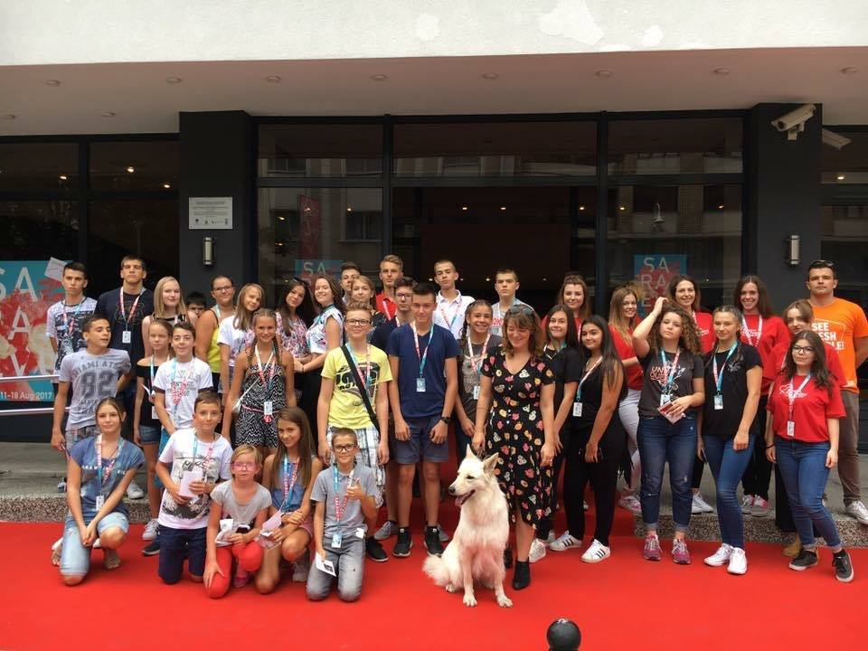
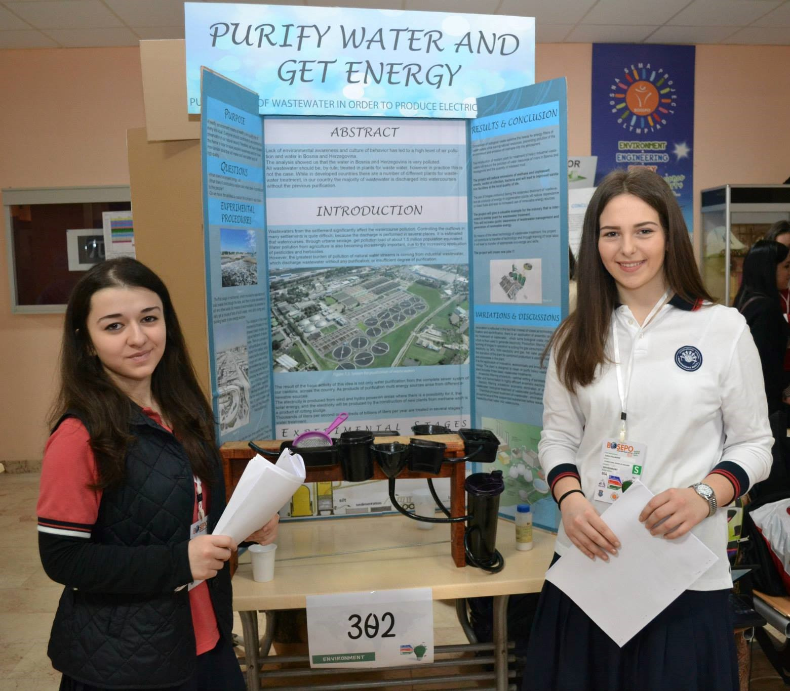
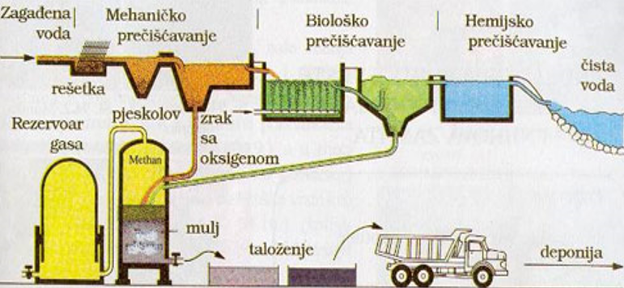
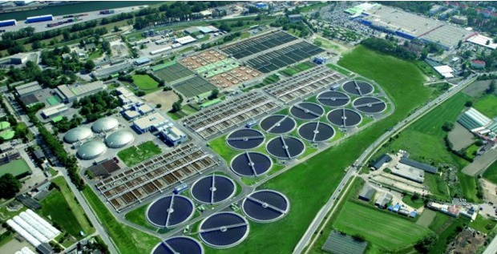

Moje ime je Sanja Salihović. Rođena sam 03.05.1999. godine u srcu Hercegovine, u prelijepom Mostaru, a odrasla sam u onome dijelu naše domovine Bosne i Hercegovine, kojega zovu "i", u Konjicu.
Ja sam dijete sa Neretve koje završava Drugu Osnovnu školu u Konjicu i seli se u Sarajevo, gdje završava Međunarodnu Srednju školu u Sarajevu i upisuje jedan od prestižnih bosanskohercegovačkih fakulteta, Prirodno-matematički fakultet Univerziteta u Sarajevu, smjer Teorijska kompjuterska nauka, na odsjeku za matematiku.
Trenutno sam treća godina na ovome studiju.
Ono malo slobodnog vremena što imam, ispunjeno je muzikom. Sviram gitaru od svoje sedme godine. Pohađala sam muzičku školu, kao i "Aka_demiju Pink Panter", koje sam još uvijek član.
Šta Sanju čini Sanjom?
Sanja ne bi bila Sanja da ne provodi vrijeme sa svojom porodicom, prijateljima, da se ne bavi fotografijom, da ne uči i ne istražuje o nekim zanimljivim IT problemima, da ne čita knjige, a i da ponekad ne pogleda dobru seriju ili film.
Mjesec august je specifičan po jednom događaju koji se održava u Sarajevu od 1995. godine, Sarajevski film festival (SFF).
Imala sam priliku da 2017-te godine volontiram na 23. Sarajevo Film Festivalu, te budem dio divnog događaja tih sedam dana i upoznam nove ljude.

RACE FOR THE CURE
Trka/šetnja za ozdravljenje, "Race for the Cure" je trka/šetnja, gdje građani pomažu osobama oboljelim od karcinoma dojke kroz prikupljanje potrebnih sredstava i podizanja svijesti javnosti o ovom oboljenju.
U ovom projektu iz predmeta "Strukture podataka i algoritmi" zadatak je bio napraviti klasu Matrica, koja matricu
čuva kao listu listi. Pošto se radi sa tzv. „rijetkim matricama“, nema ih
smisla čuvati kao nizove nizova, jer bi se rad sa njima sveo na
sabiranje i množenje nula.
Za matricu kažemo da je rijetko popunjena matrica ili “rijetka
matrica” ukoliko je većina njenih elemenata jednaka nuli, a elementi
koji nisu jednaki nuli obično su pravilno raspoređeni po matrici.
U ovom projektu zadatak je napraviti klasu Matrica, koja matricu
čuva kao listu listi.
Pamti se lista koja sadrži liste u kojima se ne nalaze
nulti elementi, tj. one liste u kojima se nalaze nenulti elementi.
Mora se voditi evidencija na koji se red koja lista odnosi, ali i unutar
tih listi treba za svaki element voditi evidenciju u kojoj je koloni.
Potrebno je da podržati razne operacije i konstruktore za matricu.
Na narednoj slici se nalazi dio projekta, odnosno zaglavlje klase Matrice.
Ovo je tema mog maturskog rada gdje je bilo neophodno opisati i kreirati neke UML dijagrame koje se koriste prilikom izrade aplikacija.
Unified Modeling Language je standardni, grafički jezik.
UML detaljno predstavlja standardnu notaciju za kreiranje dijagrama i prikazivanje raznih pogleda na sistem.
BOSEPO - Pročišćavanjem zagađene vode do električne energije

BOSEPO je naučno takmičenje koje su osnovale škole Bosna Sema. Cilj mu je promovisanje značaja i vrijednosti nauke i tehnologije za učenike. BOSEPO je platforma na kojoj studenti predstavljaju i takmiče se sa svojim projektima - papirima, panoima i drugim modelima.
Moja prijateljica i ja smo u trećem razredu srednje škole godine napravile projekat na temu Purify water and get energy.
Konverzija biološkog otpada zadovoljava potrebe za energetskim filterima otpadnih voda, istovremeno štedeći prirodne resurse, sprečavajući zagađenje okoline i emisiju metana u atmosferu.

Mehanički, biološki i hemijski proces

Sistem za pročišćavanje zagađene vode
Uvođenjem modernog postrojenja za tretman teških industrijskih otpadnih voda smanjit će se zagađenje vodnih resursa rijeka u Bosni i Hercegovini i količina ispuštenog blata.
Projekat će smanjiti emisije metana i neprijatnih mirisa, vektora infekcije, bakterija i dovest će do poboljšanih sanitarnih uslova u lokalnom kvalitetu života.
Upotreba bioplina proizvedenog tokom anaerobnog tretmana otpadnih voda kao izvora energije u kogeneracijskim postrojenjima smanjit će ovisnost o fosilnim gorivima i dovesti do povećane upotrebe obnovljivih izvora energije.
Projekat će dati primjer za industriju koja je zainteresovana za slično postrojenje za pročišćavanje otpadnih voda.
Ovo će povećati svijest javnosti o upravljanju otpadnim vodama i proizvodnji obnovljive energije.
Pomoću najnovije tehnologije za prečišćavanje otpadnih voda, projekat će doprinijeti transferu tehnologije, a kroz obuku lokalnog rada dovest će do prijenosa odgovarajućih znanja i vještina.
Projektom će se otvoriti nova radna mjesta !!!
Ovo je dio teksta iz projekta, a čitav projekat možete pogledati ovdje: